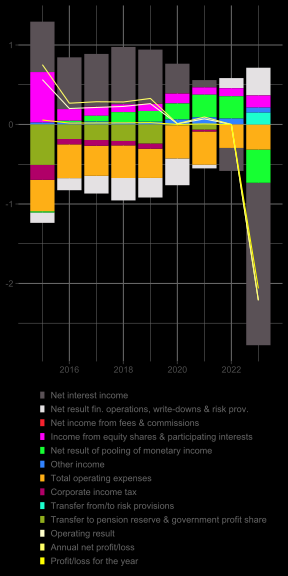
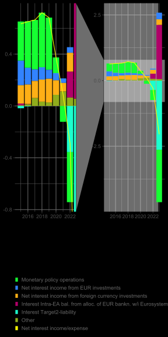
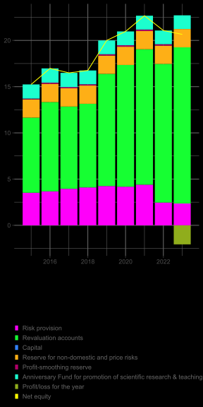
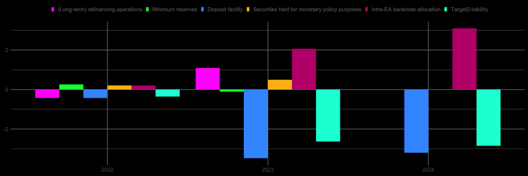

The Impact of Banknotes in Circulation on Profits of Commercial Banks in Austria
The Oesterreichische Nationalbank will present its annual report for the year 2024 at the end of March. It can be expected that the OeNB recorded a high loss again, after a loss of about 2 bn EUR in 2023. The major item impacting the loss in 2023 was net interest income, which can be expected to be strongly negative also for 2024. However, the strong increase in the value of monetary gold in EUR-terms (about 6 bn EUR in 2024) will significantly impact revaluation accounts as well as net equity, leading to a more than compensating effect for the interest-related loss.



Taking a closer look on net interest income/expense shows that interest expenses on the deposit facility of banks and Target2-liabilities were the highest contributors, while interest income on the position ‘Intra-Eurosystem balances arising from the allocation of euro banknotes within the Eurosystem’ (‘Intra-EA banknote allocation’ for the remainder of the text) had a significant opposing effect. Interest income on securities held for monetary policy purposes or refinancing operations have played a lower role. For the year 2024, values for interest expenses on the deposit facility and Target2-liabilities can be expected to be in a similar range as those in 2023, while interest income on Intra-EA banknote allocation will be of a higher magnitude. Thus, the loss stemming from net interest income will probably be lower in 2024 than in 2023.

The negative net interest income in 2023 resulted mainly from the turn in monetary policy and the respective rise in policy rates, combined with the high amount of excess liquidity in the banking system. Concerning the latter, a closer look on the main balance sheet items of the OeNB shows interesting developments. First, the stock of assets related to liquidity injecting refinancing operations has been decreasing during 2023 and 2024. However, this has not led to a decline in reserves in an equal range. A decrease in the Target2-liability would indicate that an inflow of reserves, which have been generated by other Eurosystem member countries or the ECB, would have offset for the decline in reserves stemming from decreasing refinancing operations, but this has not been the case (at least not to a relevant amount). Second, the item Intra-EA banknote allocation on asset side has increased strongly since 2023 while the item banknotes in circulation on liability side has remained nearly constant. This implies that commercial banks have returned more banknotes to the OeNB than have been issued by the latter, as a result of tourism and other cross-border effects. When banks return these banknotes to the OeNB, their reserves at the OeNB increase. In case that these additional reserves afterwards are transferred to other Euro area countries, the Target2-liability would increase (Jobst, Handig, and Schneeberger 2012). Thus, the rise in Intra-EA banknote allocation has to be absorbed by an increase either in bank reserves or the Target2-liability. Taking the whole interactions of the Austrian economy with the Euro area into account, the increase in net Intra-Eurosystem assets since 2023 is an indicator that the Austrian banking system experienced a net inflow of reserves, which have been created by the ECB or other national banks belonging to the Eurosystem.
The data show that since 2023 the increase in Intra-EA banknote allocation went along with a slight decrease in bank reserves and a volatile but on average relatively constant Target2-liability, while at the same time refinancing operations have phased out. It is thus interesting to put these items in an integrated view and see what happens to bank reserves for three different cases concerning the increase in Intra-EA banknote allocation: the increase is completely mirrored in the Target2-liability (case 1), is mirrored to 50% in Target2-liability (case 2) and does not directly affect the Target2-liability (case 3). The three examples represent the view that the additional reserves from the increase in Intra-EA banknote allocation are to a different degree used by banks for holding these reserves at their accounts at the OeNB or for external sector transactions. In all three cases the phase-out of refinancing operations leads to a strong decline in bank reserves. For the first case, this decline is partly compensated by an increasing effect due to the remaining part of the Target2-liability, which cannot be attributed to the increase in Intra-EA banknote allocation but depends on other factors connected to the external sector and the balance of payments. For the second case, the increasing effect of the residual Target2-item is lower than for the first case, while reserves also increase due to the effect related to Intra-EA banknote allocation. In the third case, the latter has a stronger impact while the former even leads to a decreasing effect on bank reserves.
What are the implications of these results if we allocate interest expense on the deposit facility to the accumulated stocks shown in the figure above? While for the first of the three cases Intra-EA banknote allocation would not have a direct effect on interest expenses on the deposit facility, the second and the third case would explain about 11% and 22% of interest expense on the deposit facility respectively for the year 2023. The results for 2024 show a significantly stronger impact of Intra-EA banknote allocation (24% for case 2 and 48% for case 3) resulting mainly from the increase in the magnitude of the latter although the Deposit Facility Rate (DFR) has been lowered during the year.
Concerning the whole Eurosystem, interest income/expenses related to Target2-claims/liabilities or claims/liabilities for Intra-EA banknote allocation do not in sum impact profits or losses, since all of these items are remunerated with the interest rate for MRO and thus only lead to a redistribution within the Eurosystem. However, the relationship between bank reserves and Intra-EA banknote allocation has important implications for country-specific profits of commercial banks. For the case of Austria, interest expenses of the OeNB related to the deposit facility explained about 25% of annual profits of the banking system in 2023 (there was an opposed effect of about 8% for interest payments by banks related to refinancing operations). The results in this blog entry show how random factors may impact profits of commercial banks, thus giving additional taxes on these profits a legitimate basis.